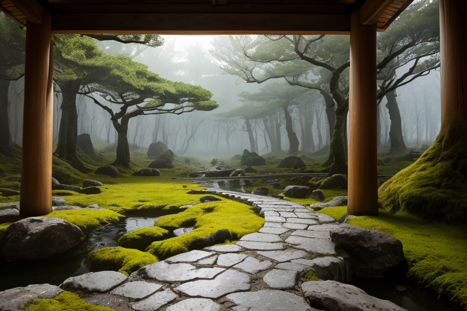
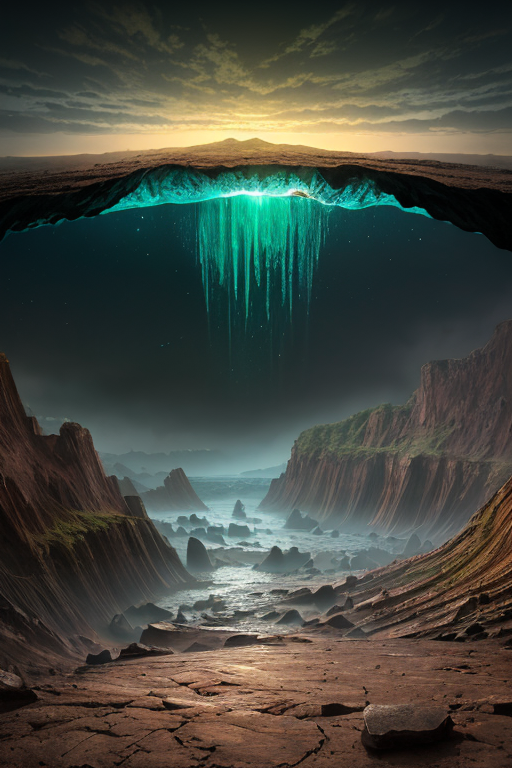
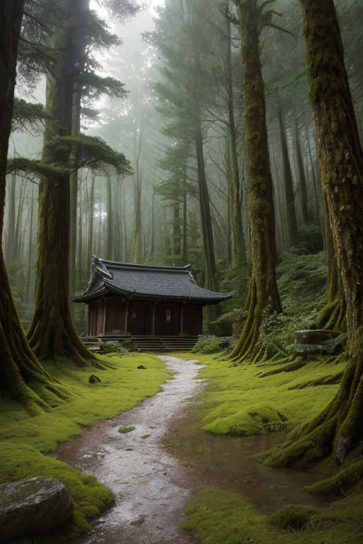
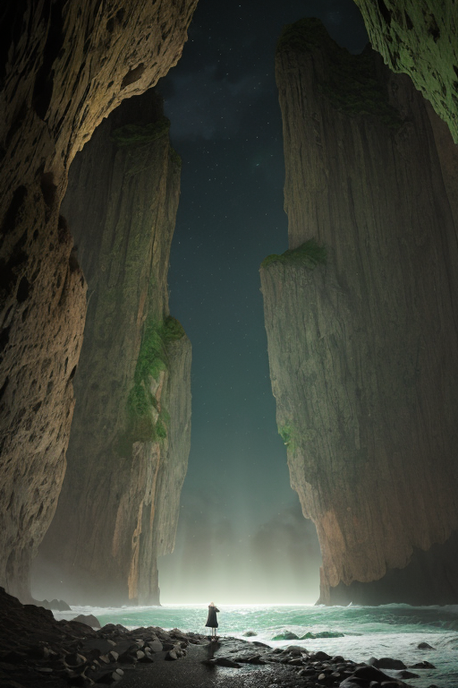

第一章 現実の福井
あなたはまだ気づいていない。この土地にも、王がいることを。
永平寺の杉並木は、七百五十年の沈黙を抱えている。参道を覆う巨木の根は、深く地中へと食い込み、山の地盤そのものを縫い留めているかのようだ。その静寂の奥、本堂の床下に、一人の王が坐っていた。フクイア・ストラタ、層を司る王である。彼の目は、足下に広がる地層の記憶を読み続けていた。断層の微かな軋み、地下水脈の変移、膨大な時間が積み重なった地質の重さ。全ては、この「古さ」の上に成り立つ現在だった。
「歪みは、予測範囲内です」
傍らに佇む主席妖精ストラリスが、淡々と報告する。その声は、岩盤のように冷たく確かだった。
「しかし、蓄積は続いています」
王は微かに頷いた。古さは土台であると同時に、巨大な重石でもあった。安定をもたらすが、一度動き出せばその勢いは計り知れない。彼の役目は、この重石が急激に転がり落ちるのを防ぎ、ゆっくりと、可能な限り穏やかに着地させることだ。禅寺の庭に一片の落葉が触れるように。彼は目を閉じ、意識を地中深くへと降ろしていった。一乗谷の戦国遺跡の下、三方五湖の泥炭層の底、恐竜の骨が眠る石見層群へ。全ての「層」が、彼の感覚の延長だった。

第二章「歪みの兆候」
東尋坊の荒波が、いつになく激しく岩肌を砕いていた。それは単なる荒天ではなかった。地中深く、日本列島を形作る古い地層の一部が、長い眠りから目覚めようとする、微かな痙攣だった。フクイア・ストラタは、三方五湖の畔に立ち、水面に映る逆さの山々を見つめていた。湖底に堆積する泥炭層は、過去数千年分の記憶を封じたタイムカプセルである。今、その記憶の「重さ」が、地殻に新たな負荷をかけ始めていた。
「ジュラミアより報告です」ストラリスの声は、地鳴りのように低く響いた。「一乗谷朝倉氏遺跡の地下で、過去の戦乱の『痕跡』が活性化しています。これは…地盤の緩みを招く恐れがあります」
かつて栄華を極め、そして灰燼に帰した戦国都市の記憶。その断絶と無念の「歪み」が、地質記録に刻まれ、数百年を経て微細な亀裂として現れようとしていた。古さは確かに土台だが、積み重なる歴史の全てが中性ではいられない。負の記憶も、確実に地層を構成する一要素なのだ。
フクイアは、永平寺の深い森の静寂を思い浮かべた。坐禅のように、動かずに全てを見つめること。しかし、今、彼の内側で初めてある感情が揺らぎ始めていた。焦りではない。膨大な時間の堆積の前に感じる、深い、深い哀愁だった。
第三章 王の葛藤
東尋坊の荒波が、黒い岩肌を砕く。その轟音は、地層深くに眠る古い歪みのうめきと共鳴している。フクイア・ストラタは、三方五湖を隔ててその方向を見つめていた。彼の手元には、ジュラミアが呼び起こした地質記録が、無言の重みとして横たわる。朝倉氏が栄華と共に滅んだ一乗谷の地殻のひずみ。それは、静かなる蓄積の果てに、必ず表出を求める。
「調整を施し、この歪みを分散させることも可能です」とストラリスは淡々と告げた。「しかし、それは新たな脆弱層を生む可能性があります。現状を保ち、表出を許容する方が、長期的な地盤の安定には……」
「犠牲が出る」とフクイアは呟いた。彼の声には、かつてない軋みがあった。永平寺の禅の如く、自然の成り行きを見守るべきか。それとも、王としての力を以て、歴史の負の遺産を「今」で食い止めるべきか。古層は土台であると同時に、時には重石にもなる。彼は、恐竜博物館に眠る骨格が語る、突然の終焉を思い出した。全ての変化は、ある瞬間、容赦なく訪れる。
彼は目を閉じた。越前の海から吹く風が、水仙の微かな香りを運んでくる。

第四章 妖精との対話
「王よ、あなたは揺れている。」
永平寺の深い杉木立の下、主席妖精ストラリスが静かに言った。彼女の声は、地層を伝わる微振動のようだった。「我々は地盤を安定させる者。しかし、安定とは、動かないことではない。圧力が蓄積されれば、それはより大きな破壊を招く。」
傍らで、古層の妖精ジュラミアが、掌に三方五湖の古い泥層の標本を浮かべた。「この中には、無数の変化の歴史が封じられています。恐竜が闊歩した時代も、海が陸になった時代も、全ては『変化』の積層です。停滞は、変化の否定ではありません。次の変化への、呼吸なのです。」
フクイアは一乗谷朝倉氏遺跡の、静かな石垣を見つめた。栄華も滅びも、地層の中では等しく歴史の一断面だ。「では、今この圧力に手を加えることは、歴史への干渉ではないか？」
「干渉など、できません。」ストラリスは首を振った。「我々ができるのは、崩落の方向を一寸変え、逃げる時間を一秒延ばすことだけ。それが、この土地に積もった『古さ』という土台の上で、『今』を生きる者たちに、王ができる唯一の調整です。」
風が木々を揺らし、古い苔の香りが漂った。

第五章「微調整と余韻」
東尋坊の荒波が、絶壁の古い地層を打ち砕く。その轟音は、百万年の歳月の重みを一瞬で削り取る脆さを物語っていた。フクイア・ストラタは、足下の岩盤に手を触れる。地中を流れる巨大な力の歪みが、ここで一気に解放されようとしている。彼の王国の「古さ」という土台そのものが、今、音を立てて軋む。
「逃がすべきか、受け止めるべきか。」ストラリスが問う。受け止めれば、この地層に蓄えられた長い記憶の一部が、代償として失われる。ジュラミアが守る恐竜たちの眠りも、永平寺の静寂も、揺らぐ。しかし、逃がせば、歪みは別の場所、人の暮らしの直下へと跳ぶ。
王は目を閉じた。古さは停滞ではない。積み重ねられた時間は、未来を支える礎だ。礎が砕けることを選ぶ。彼の全身から、茶と緑の光が地層へと滲み出た。圧力は、彼が意図した一線で解放される。東尋坊の断崖の一部が、轟音と共に海中へと崩落した。代わりに、街を揺らすはずだった大きな歪みは、深い地中で静かに分散されていった。
波が静まる頃、彼の体からは、ジュラミアが紡いだ幾つかの古い記憶の断片が、微かな光の粒となって消えていた。失われたものは戻らない。しかし、礎は残った。彼は崩れた崖を見つめ、ただ、静かに佇んだ。
あなたの町にも、王がいる。